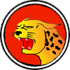

|

|
>> Содержание / Список кланов /
 OrderOfWildLynx OrderOfWildLynx
“…на следующей неделе приедут за данью.” – закончил этими словами свой доклад советник. От последней фразы глаза Князя налились кровью. Он хорошо знал, что это значило: опять заставят отдать всю казну. И зачем столько золота служителям нового бога, как они сами себя называли, бога, не признающего роскоши и богатств? Но это ещё полбеды, ведь скоро придёт время отправлять ещё один караван, караван рабов для жертвоприношений, на Запад, в земли армады тёмных язычников, поклоняющихся шести тёмным богам.
А ведь когда-то всё было совсем не так. Походы были успешны, добыча огромна, а земли Князя расширялись, пока однажды не упёрлись, на востоке, в стены монастырей, больше напоминавших военные лагеря, этого самого нового бога. А на западе наткнулись на частокол пик сплотившихся языческих племён. И каждый из новых врагов за мир требовал слишком много, и Князь соглашался. Его войско не могло оказать хоть какого-то сопротивления ни тем, ни другим.
И так продолжалось довольно долго. Князь перепробовал всё: вольные дружины и наёмные полка на время могли удержать границы, но, отслужив контракт, они уходили. А враг возвращался…
Однажды в столицу пришёл человек. С первого взгляда его можно было принять за обычного путника: простой серый плащ, обычные сапоги и такой же обычный посох. Но на плаще был вышит знак, знак Ордена, при виде которого стражники у ворот дружно разинули рты. Знак принадлежал не существующему, как считали очень многие, Ордену Дикой Рыси…
Этот Орден считался самым странным и самым тайным из всех орденов. Они не признавали никакой власти, не присягали на верность ни одному правителю. Лишь иногда участвуя в войнах и преследуя свою единственную цель – равновесие.
Когда Князю доложили, кто просит аудиенции, он сначала не поверил своим ушам: сам глава «Ордена Дикой Рыси». Тот, кого никто и никогда не видел, кого считали мифом, как и сам Орден. Князь давно пытался их разыскать, но все попытки были напрасны. И вот теперь они сами пришли к нему.
Разговор был долгим и закончился глубокой ночью. А на следующее утро гость исчез так же внезапно, как и появился. Но вскоре он вернулся. Столица начала готовиться к войне.
Верховный жрец язычников лишь рассмеялся, получив донесение, о том, что войска Князя выступили войной. Но прошло совсем немного времени, и Верховный жрец горько пожалел о своей беспечности. Алтари их богов вскоре оросились кровью, но на этот раз - кровью самих жрецов. Воины не брали пленных.
Служители же нового бога предпочли укрыться за стенами монастырей, но это им мало, чем помогло…
Когда всё было кончено, Князь предложил Ордену остаться в столице, и поинтересовался о награде. В ответ он услышал лишь одну фразу:
– Наша цель не земные богатства, ещё многие нуждаются в нашей помощи, мы уходим...
Официальный сайт клана: http://wildlynx.clan.su/
|
 |
|